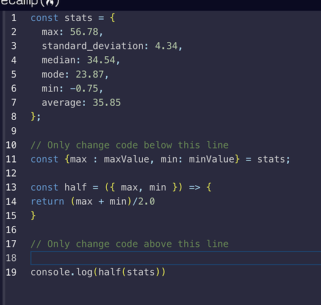

Specialized programming language and the effective way to tackle programming challenges
31 Aug 2023
My honest thoughts about JS are, “It’s used for web scripting”, “convenience to write scripts for a responsive website and web-specialized programming language”. When compared to other programming languages, js is better than java in a sense that it’s easier to understand and can accomplish many things that can’t be done in java, such as passing functions as parameters, returning more than one data type, and being convenient for the consumer side because all modern browsers come with js. However, I consider this a web-specialized programming language because it’s not as versatile as other languages such as Java, C, C++, or Python. JS has numerous third-party libraries supporting web development and is also useful to run scripts on the client side because they might not have a programming language compiler installed, but they definitely have JS in their browser.
arrow function and destructuring assignment

I have obtained two valuable JS techniques through ES6, where ES stands for ECMAScript. The first technique, or shorthand, I learned is the arrow function. This shorthand reduces a lot of code I had to write originally and makes it more readable. It is like list comprehension in Python, which increases readability and reduces the chances of errors. Another technique is the destructuring assignment. This helped me improve the performance and readability of the code and also made it more concise as the number of lines needed for the same result decreased.
Effective learning method
WOD, or Workout of the Day, is the perfect style of solving programming challenges. I personally think there are two aspects of the WOD that make this style an awesome learning method: ‘score’ and ‘open-internet’. The ‘score’ is the amount of time a student took to finish the challenge; it consists of 4 levels (time intervals): Rx, Av, Sd, and DNF. Once the student’s timer reaches DNF, the student will have to look up the answer and redo the problem until he or she solves the problem within a certain amount of time. These two mechanisms represent engagement, repetition, and time efficiency, which are all crucial for learning. To me, this will definitely work.